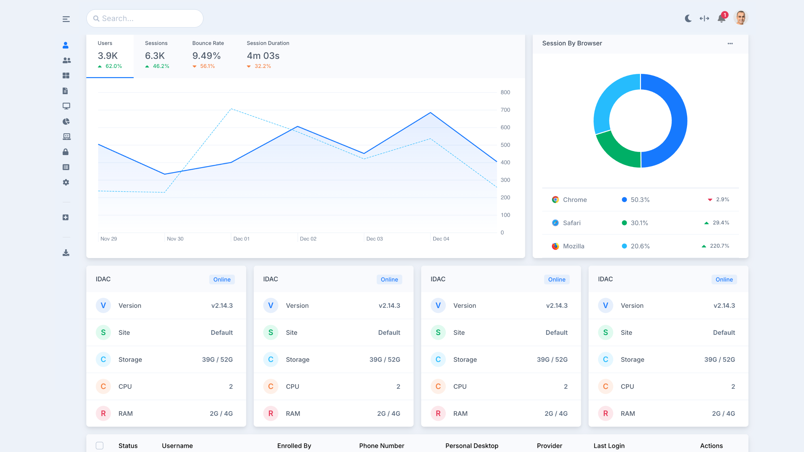
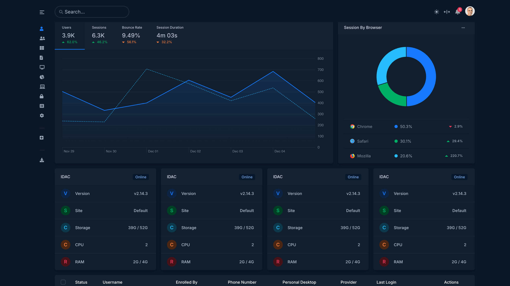
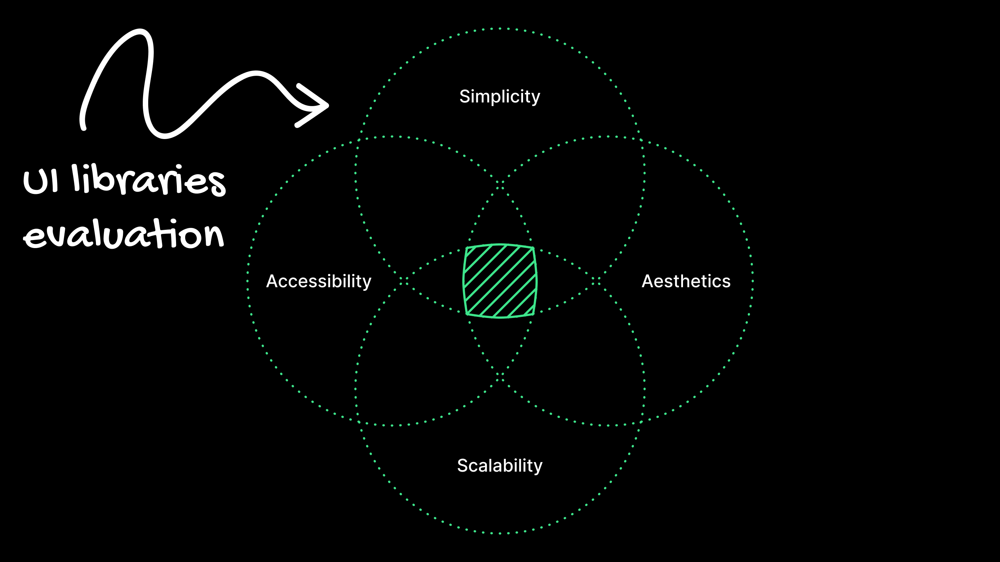
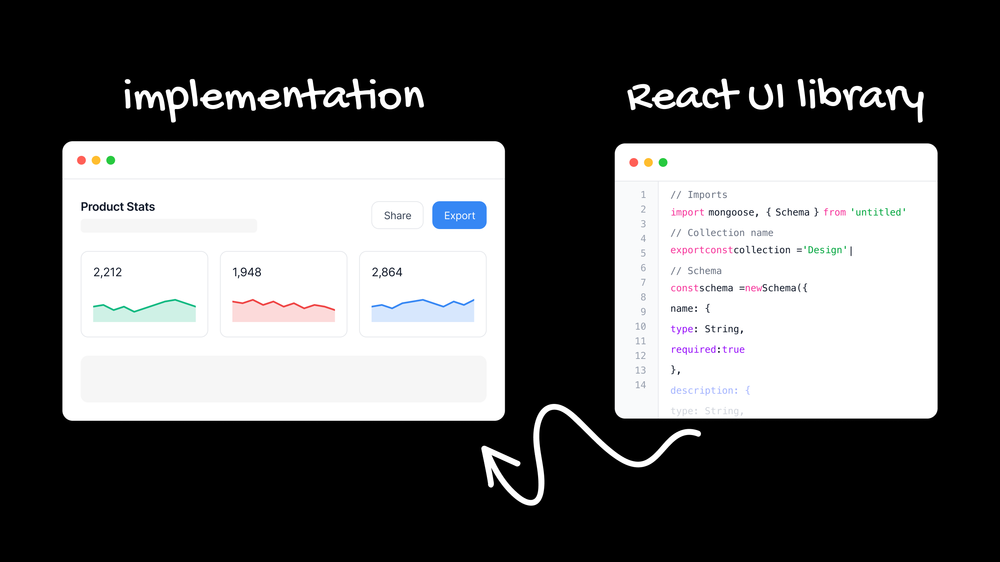
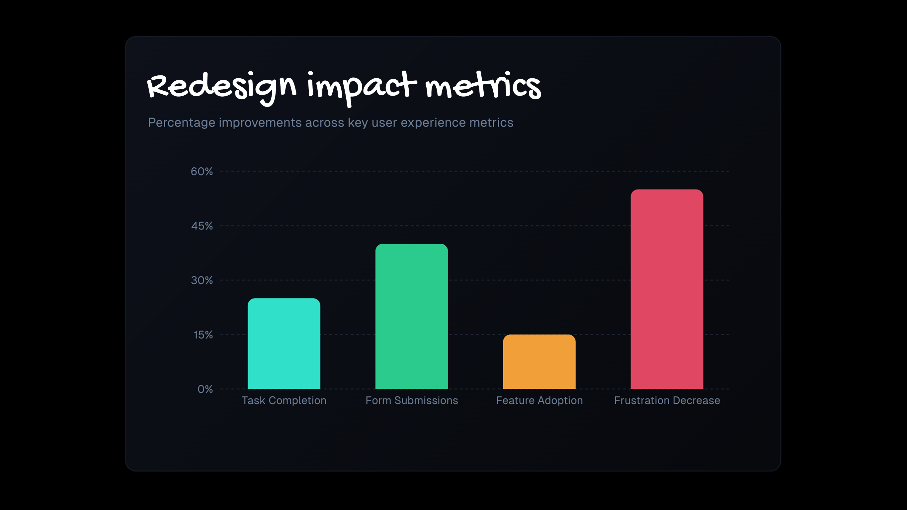
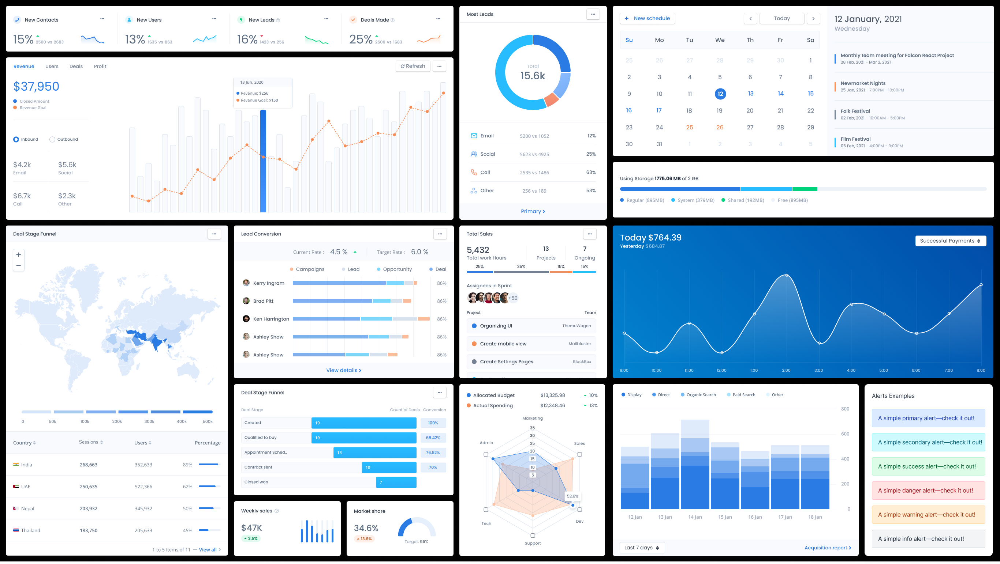

This design system provides proven effectiveness in usability, performance, responsiveness, and customization, available to development teams for building new features faster.
View Live Preview

This case study details user research supporting the migration from an in-house design system to a third-party UI library.
The original in-house design system's building blocks and UI components were buggy, outdated, performed poorly, required visual improvement, and lacked cross-platform support, which significantly complicated the development team's implementation process and slowed delivery.
Common libraries such as Material UI (MUI), Untitled UI, Preline UI, and Ant Design offer proven effectiveness in usability, performance, responsiveness, and customization. All of these libraries provide comprehensive component suites and well-maintained Figma libraries, making them ideal for building modern products.
The client experienced a modern, sleek design, a stable and bug-free system, robust cross-platform support, and enhanced usability. Internally, designers and engineers achieved improved collaboration throughout the design process, particularly during design handoff.
This research effort investigated the viability of migrating our internal product design system from a proprietary, in-house solution to a robust, third-party UI library.
The core objective was to address critical shortcomings in the original system's stability, performance, consistency, and developer experience to ultimately accelerate product delivery and enhance user satisfaction. The goal was to evaluate leading third-party UI libraries to identify the best fit for our product's needs.

The existing design system's building blocks and UI components were found to be critically flawed, characterized by frequent bugs, outdated aesthetics, and poor performance metrics. Furthermore, a significant lack of cross-platform support severely complicated implementation for development teams, acting as a major bottleneck that consistently slowed down the feature delivery timeline.
The migration is projected to yield significant positive outcomes, translating to a modern, sleek design and enhanced usability for end-users. Internally, the availability of a stable component library is expected to radically improve designer-engineer collaboration, particularly streamlining the design handoff process and fostering more efficient product iteration.

The evaluation focused on key criteria: proven usability, performance benchmarks, customization flexibility, and the availability of well-maintained, comprehensive Figma libraries. This methodological approach was designed to identify a solution offering immediate, demonstrable improvements over the legacy system.

The analysis confirmed that established common libraries offer superior effectiveness across all measured parameters:
Increased system performance and improved cross-functional collaboration were directly achieved through the migration to a stable, third-party UI component library.
A design system that is modern, slick, and delivers the ultimate user experience including:
